Chapter 15 Graphing Part II
library(tidyverse) # loading ggplot2 and dplyr
library(viridis) # The viridis color schemes
library(latex2exp) # For plotting math notation
library(plotly) # for interactive hover-textWe have already seen how to create many basic graphs using the ggplot2 package. However we haven’t addressed many common scenarios. In this chapter we cover many graphing tasks that occur.
15.1 Multi-plots
There are several cases where it is reasonable to need to take several possibly unrelated graphs and put them together into a single larger graph. This is not possible using facet_wrap or facet_grid as they are intended to make multiple highly related graphs. Instead we have to turn to other packages that enhance the ggplot2 package.
15.1.1 cowplot package
Claus O. Wilke wrote a lovely book about data visualization and also wrote an R package to help him tweek his plots. One of the functions in his cowplot package is called plot_grid and it takes in any number of plots and lays them out on a grid.
P1 <- ggplot(iris, aes(x=Sepal.Length, y=Sepal.Width, color=Species)) +
geom_point(size=3) + theme(legend.position='bottom')
P2 <- ggplot(trees, aes(x=Height, y=Volume, color=Girth)) +
geom_point() + theme(legend.position='bottom')
P3 <- ggplot(iris, aes(x=Sepal.Length)) +
geom_histogram(bins=30)
P4 <- ggplot(iris, aes(x=Species, y=Sepal.Length, fill=Species)) +
geom_boxplot() + theme(legend.position='bottom')
cowplot::plot_grid(P1, P2, P3, P4)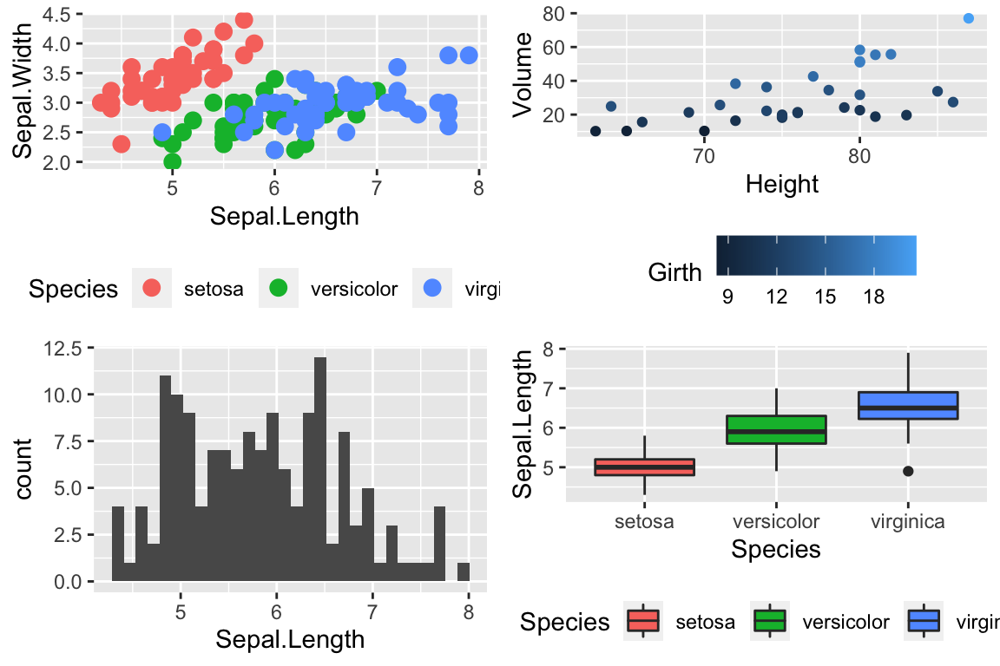
Notice that the graphs are by default are arranged in a 2x2 grid. We could adjust the number or rows/columns using the nrow and ncol arguments. Furthermore, we could add labels to each graph so that the figure caption to refer to “Panel A” or “Panel B” as appropriate using the labels option.
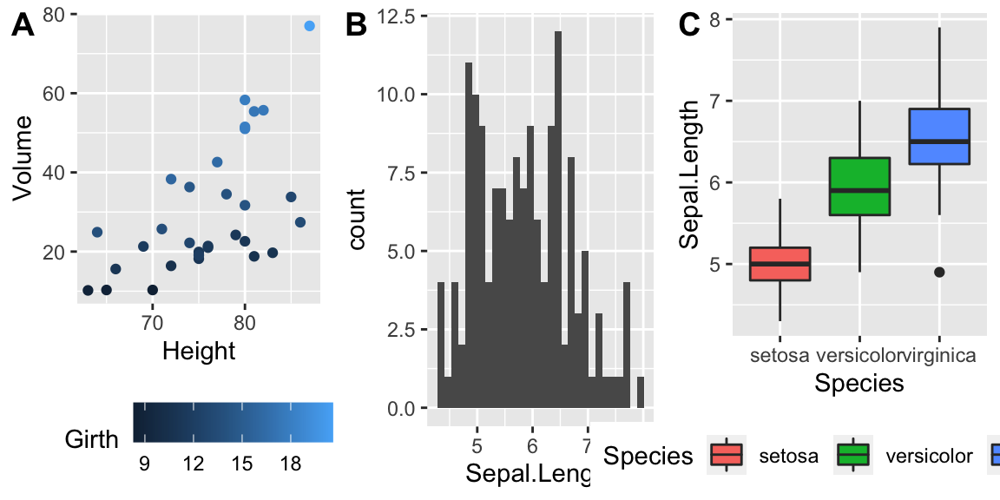
15.1.2 multiplot in Rmisc
In his book, R Graphics Cookbook Winston Chang produced a really nice function to address this issue, but just showed the code. The folks that maintain the R miscellaneous package Rmisc kindly included his function. The benefit of using this function is that you can control the layout to not be on a grid. For example we might want two graphs side by side, and then the third be short and wide underneath both. By specifying different numbers and rows and columns in my layout matrix, we can highly customize how the plot looks.
# Define where the first plot goes, etc.
my.layout <- matrix(c(1, 2, 2,
1, 2, 2,
3, 3, 3), byrow = TRUE, nrow=3)
Rmisc::multiplot(P2, P3, P4, layout = my.layout )
Unfortunately, Rmisc::multiplot doesn’t have a label option, so if you want to refer to “Panel A”, you need to insert the label into each plot separately.
15.2 Customized Scales
While ggplot typically produces very reasonable choices for values o the axis scales and color choices for the color and fill options, we often want to tweak them.
15.2.1 Color Scales
15.2.1.1 Manually Select Colors
For an individual graph, we might want to set the color manually. Within ggplot there are a number of scale_XXX_ functions where the XXX is either color or fill.
cowplot::plot_grid(
P1 + scale_color_manual( values=c('red','navy','forest green') ),
P2 + scale_color_gradient(low = 'blue', high='red')
)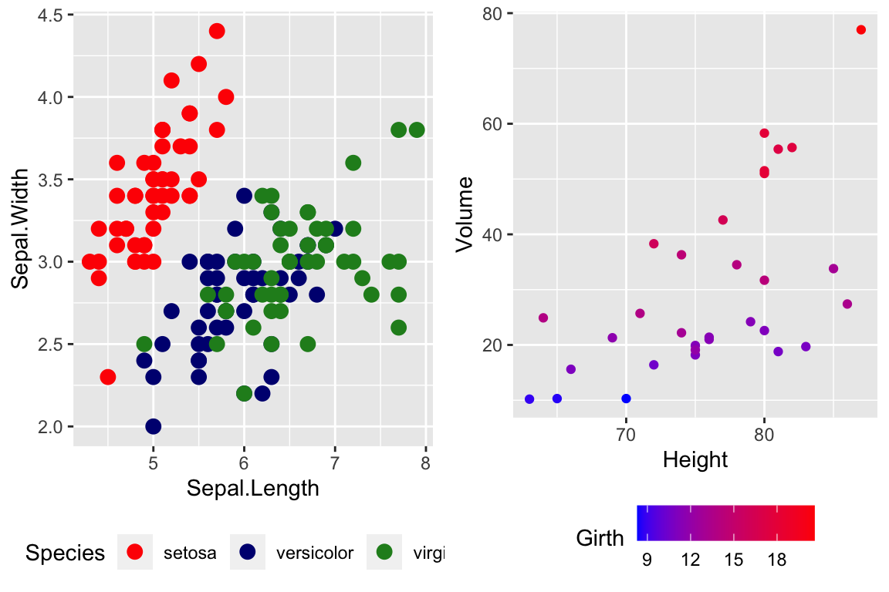
For continuous scales for fill and color, there is also a scale_XXX_gradient2() function which results in a divergent scale where you set the low and high values as well as the midpoint color and value. There is also a scale_XXX_grandientn() function that allows you to set as many colors as you like to move between.
cowplot::plot_grid(
P2 + scale_color_gradient2( low = 'black', mid='white', midpoint=14, high='red' ),
P2 + scale_color_gradientn(colors = c('red','orange','yellow','green','blue','violet') )
)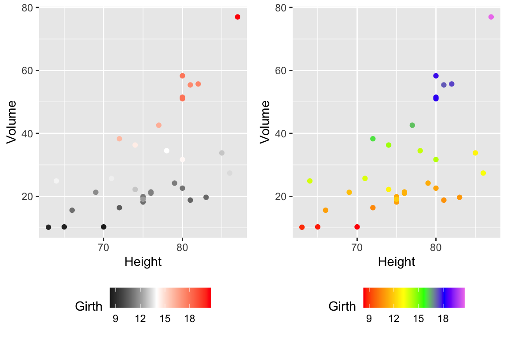
Generally I find that I make poor choices when picking colors manually, but there are times that it is appropriate.
15.2.1.2 Palettes
In choosing color schemes, a good approach is to use a color palette that has already been created by folks that know about how colors are displayed and what sort of color blindness is possible. There are two palette options that we’ll discuss, but there are a variety of other palettes available by downloading a package.
15.2.1.2.1 RColorBrewer palettes
Using the ggplot::scale_XXX_brewer() functions, we can easily work with the package RColorBrewer which provides a nice set of color palettes. These palettes are separated by purpose.
Qualitative palettes employ different hues to create visual differences between classes. These palettes are suggested for nominal or categorical data sets. 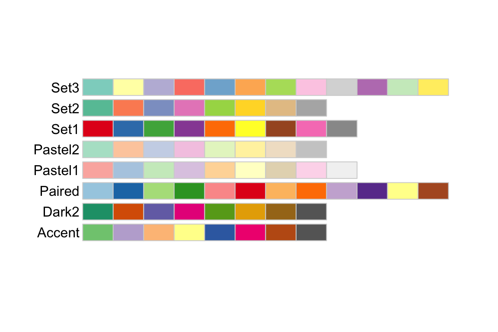
Sequential palettes progress from light to dark. When used with interval data, light colors represent low data values and dark colors represent high data values. 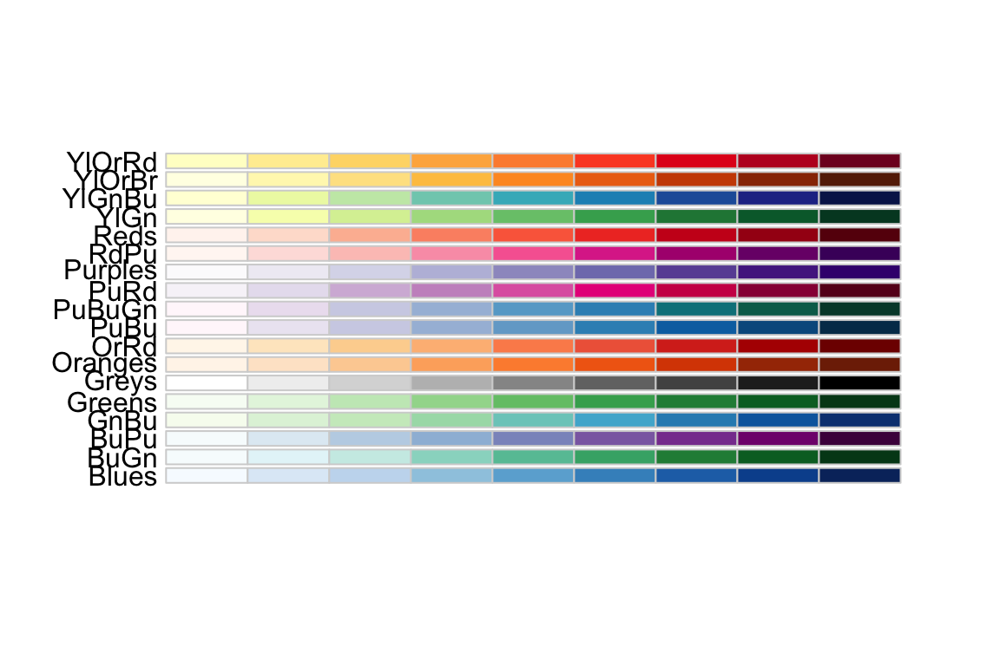
Diverging palettes are composed of darker colors of contrasting hues on the high and low extremes and lighter colors in the middle. 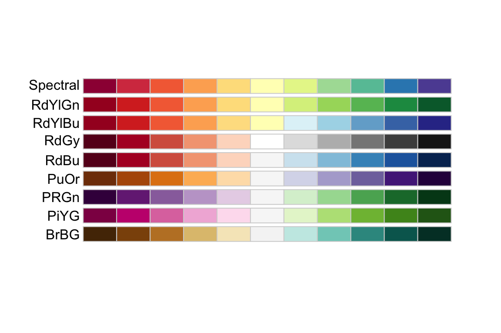
To use one of these palettes, we just need to pass the palette name to scale_color_brewer or scale_fill_brewer
cowplot::plot_grid(
P1 + scale_color_brewer(palette='Dark2'),
P4 + scale_fill_brewer(palette='Dark2') )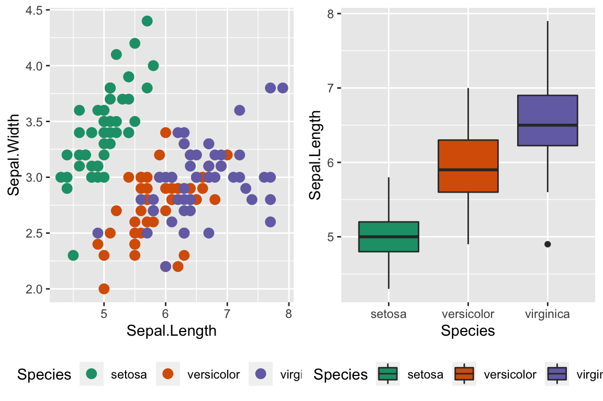
15.2.1.2.2 viridis palettes
The package viridis sets up a few different color palettes that have been well thought out and maintain contrast for people with a variety of color-blindess types as well as being converted to grey-scale.
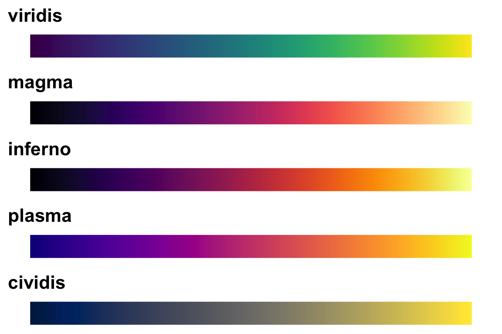
cowplot::plot_grid(
P1 + scale_color_viridis_d(option='plasma'), # _d for discrete
P2 + scale_color_viridis_c( option='viridis') ) # _c for continuous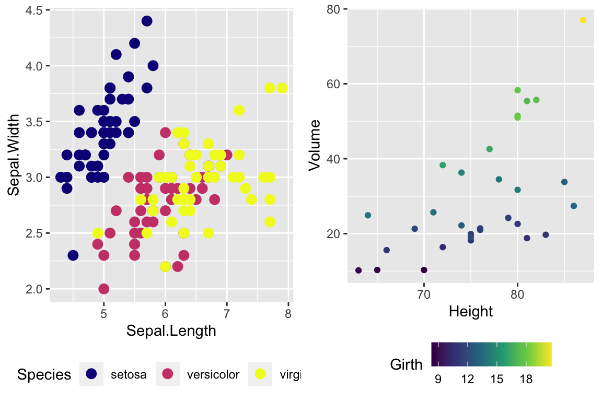
There are a bunch of other packages that manage color palettes such as paletteer, ggsci and wesanderson.
15.2.2 Setting major & minor ticks
For continuous variables, we need to be able to control what tick and grid lines are displayed. In ggplot, there are major and minor breaks and the major breaks are labeled and minor breaks are in-between the major breaks. The break point labels can also be set.
ggplot(trees, aes(x=Height, y=Volume)) + geom_point() +
scale_x_continuous( breaks=seq(65,90, by=5) ) +
scale_y_continuous( breaks=c(30,50), labels=c('small','big') )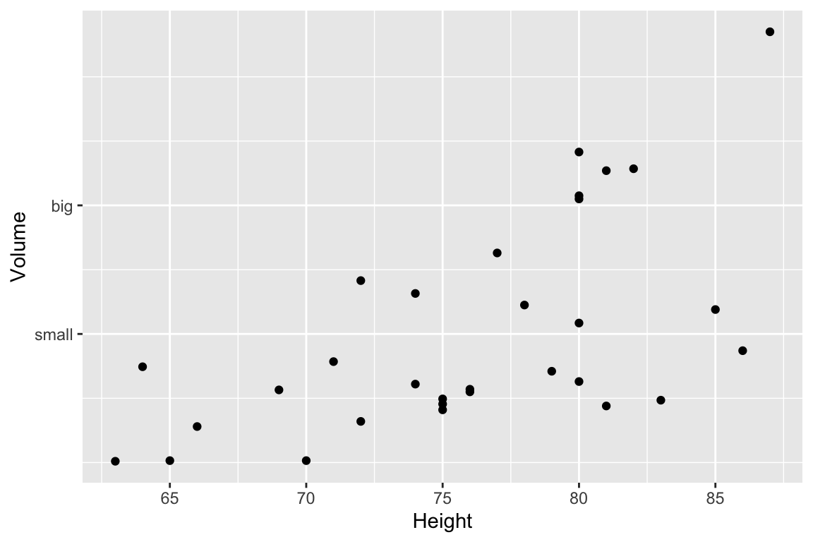
15.2.3 Log Scales
For this example, we’ll use the ACS data from the Lock5Data package that has information about Income (in thousands of dollars) and Age. Lets make a scatterplot of the data.
# Import the data and drop any zeros
data('ACS', package='Lock5Data')
ACS <- ACS %>%
drop_na() %>% filter(Income > 0)
cowplot::plot_grid(
ggplot(ACS, aes(x=Age, y=Income)) +
geom_point(),
ggplot(ACS, aes(x=Age, y=log10(Income))) +
geom_point()
)
Plotting the raw data results in an ugly graph because six observations dominate the graph and the bulk of the data (income < $100,000) is squished together. One solution is to plot income on the \(\log_{10}\) scale. The second graph does that, but the labeling is all done on the log-scale and most people have a hard time thinking in terms of logs.
This works quite well to see the trend of peak earning happening in a persons 40s and 50s, but the scale is difficult for me to understand (what does \(\log_{10}\left(X\right)=1\) mean here? Oh right, that is \(10^{1}=X\) so that is the $10,000 line). It would be really nice if we could do the transformation but have the labels on the original scale.
cowplot::plot_grid(
ggplot(ACS, aes(x=Age, y=Income)) +
geom_point() +
scale_y_log10(),
ggplot(ACS, aes(x=Age, y=Income)) +
geom_point() +
scale_y_log10(breaks=c(1,10,100),
minor=c(1:10,
seq( 10, 100,by=10 ),
seq(100,1000,by=100))) +
ylab('Income (1000s of dollars)')
)
Now the y-axis is in the original units (thousands of dollars) but obnoxiously we only have two labeled values. Lets define the major break points (the white lines that have numerical labels) to be at 1,10,100 thousand dollars in salary. Likewise we will tell ggplot2 to set minor break points at 1 to 10 thousand dollars (with steps of 1 thousand dollars) and then 10 thousand to 100 thousand but with step sizes of 10 thousand, and finally minor breaks above 100 thousand being in steps of 100 thousand.
15.3 Themes
Many fine-tuning settings in ggplot2 can be manipulated using the theme() function. I’ve used it previously to move the legend position, but there are many other options.
p1 <- ggplot(ChickWeight, aes(x=Time, y=weight, colour=Diet, group=Chick)) +
geom_line() + labs(title='Chick Weight: Birth to 21 days')
# Two common examples of things to change
cowplot::plot_grid(nrow=2,
p1 + theme(plot.title = element_text(hjust = 0.5, size=25)),
p1 + theme(legend.position = 'bottom') # legend to bottom
)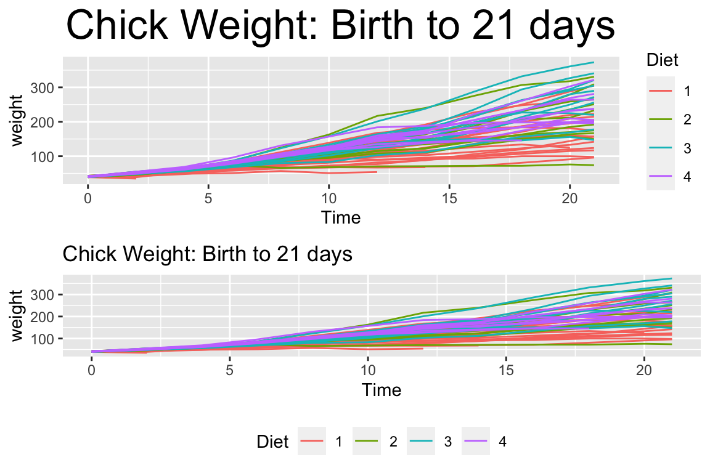
There are many things to tweak using the theme() command and to get a better idea of what is possible, I recommend visiting the ggplot2 web page documentation and examples. Notably, one thing that is NOT changed using the theme command is the color scales.
A great deal of thought went into the default settings of ggplot2 to maximize the visual clarity of the graphs. However some people believe the defaults for many of the tiny graphical settings are poor. You can modify each of these but it is often easier to modify them all at once by selecting a different theme. The ggplot2 package includes several, theme_bw(), and theme_minimal() being the two that I use most often. Other packages, such as cowplot and ggthemes, have a bunch of other themes that you can select from. Below are a few examples:
Rmisc::multiplot( cols = 2,
p1 + theme_bw() + labs(title='theme_bw'), # Black and white
p1 + theme_minimal() + labs(title='theme_minimal'),
p1 + theme_dark() + labs(title='theme_dark'),
p1 + theme_light() + labs(title='theme_light')
)
Rmisc::multiplot( cols = 2,
p1 + cowplot::theme_cowplot() + labs(title='cowplot::theme_cowplot()'),
p1 + cowplot::theme_minimal_grid() + labs(title='cowplot::theme_minimial_grid'),
p1 + ggthemes::theme_stata() + labs(title='ggthemes::theme_stata()'),
p1 + ggthemes::theme_tufte() + labs(title='ggthemes::theme_tufte()'),
p1 + ggthemes::theme_economist() + labs(title='ggthemes::theme_economist()'),
p1 + ggthemes::theme_fivethirtyeight() + labs(title='ggthemes::theme_fivethirtyeight()'),
p1 + ggthemes::theme_excel_new() + labs(title='ggthemes::theme_excel_new()'),
p1 + ggthemes::theme_gdocs() + labs(title='ggthemes::theme_gdocs()')
)
Finally, we might want to select a theme for all subsequent plots or modify a specific aspect of the theme.
| Command | Result |
|---|---|
theme_set( theme_bw() ) |
Set the default theme to be the theme_bw() theme. |
theme_update( ... ) |
Update the current default them. |
This will allow you to set the graphing options at the start of your Rmarkdown/R-script document. However the one thing it does not do is allow you to change the default color themes (we still have to do for each graph).
15.4 Mathematical Notation
It would be nice to be able to include mathematical formula and notation on plot axes, titles, and text annotation. R plotting has a notation scheme which it calls expressions. You can learn more about how R expressions are defined by looking at the plotmath help help page. They are similar to LaTeX but different enough that it can be frustrating to use. It is particularly difficult to mix character strings and math symbols. I recommend not bothering to learn R expressions, but instead learn LaTeX and use the R package latex2exp that converts character strings written in LaTeX to be converted into R’s expressions.
LaTeX is an extremely common typesetting program for mathematics and is widely used. The key idea is that $ will open/close the LaTeX mode and within LaTeX mode, using the backslash represents that something special should be done. For example, just typing $alpha$ produces \(alpha\), but putting a backslash in front means that we should interpret it as the greek letter alpha. So in LaTeX, $\alpha$ is rendered as \(\alpha\). We’ve already seen an introduction to LaTeX in the Rmarkdown Tricks chapter.
However, because I need to write character strings with LaTeX syntax, and R also uses the backslash to represent special characters, then to get the backslash into the character string, we actually need to do the same double backslash trick we did in the string manipulations using regular expressions section.
seed <- 7867
N <- 20
data <- data.frame(x=runif(N, 1, 10)) %>% # create a data set to work with
mutate(y = 12 - 1*x + rnorm(N, sd=1)) # with columns x, y
model <- lm( y ~ x, data=data) # Fit a regression model
data <- data %>% # save the regression line yhat points
mutate(fit=fitted(model))
ggplot(data, aes(x=x)) +
geom_point(aes(y=y)) +
geom_line(aes(y=fit), color='blue') +
annotate('text', x=9, y=9.5,
label=latex2exp::TeX('$\\hat{\\rho}$ = 0.916') ) + # always double \\
labs( x=latex2exp::TeX('X-axis $\\alpha$'),
y=latex2exp::TeX('Y: $\\log_{10}$(Income)'),
title=latex2exp::TeX('Linear Models use: $\\hat{\\beta} = (X^TX)^{-1}X^Ty$'))## Warning in is.na(x): is.na() applied to non-(list or vector) of type
## 'expression'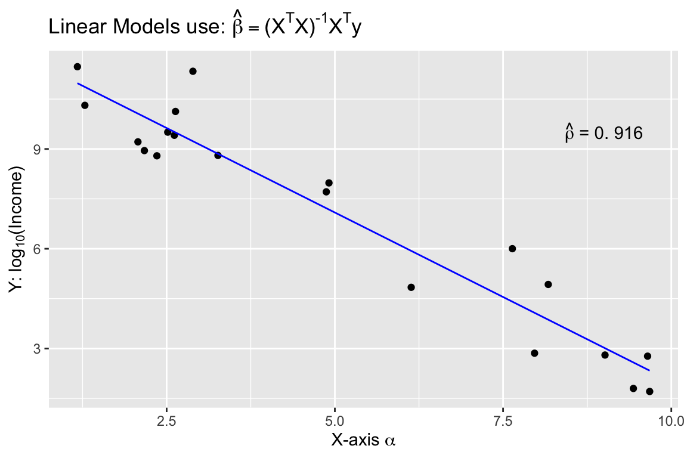
The warning message that is produced is coming from ggplot and I haven’t figured out how to avoid it. Because it is giving us the graph we want, I’m just going to ignore the error for now.
One issue is how to add expression to a data frame. Unfortunately, neither data.frame nor tibble will allow a column of expressions, so instead we have store it as a character string. Below, we create three character strings using standard LaTeX syntax, and then convert it to a character string that represents the R expression. Finally, in ggplot, we tell the geom_text layer to parse the label and interpret it as an R expression.
foo <- data.frame( x=c(1,2,3), y=c(2,2,2) ) %>%
mutate( label1 = paste('$\\alpha$ = ', x) ) %>% # label is a TeX character string
mutate( label2 = latex2exp::TeX(label1, output = 'character') ) # label2 is an expression character string
ggplot(foo, aes(x=x, y=y) ) +
geom_label( aes(label=label2), parse=TRUE ) # parse=TRUE forces an expression interpretation 
15.5 Interactive plots with plotly
Plotly is technical computing company that specializes in data visualization. They have created an open source JavaScript library to produce graphs, which is confusingly referred to as plotly. Because plotly is JavaScript, and RStudio’s Viewer pane is actually a web browser, it easily provides interactive abilities in RStudios Viewer pane.
A good tutorial book about using plotly was written by Carson Sievert.
The simple version is that you can take a ggplot graph and pipe it into the ggplotly and it will be rendered into an interactive version of the graph.
We can use the widgets to zoom in and out of the graph. Notice that as we hover over the point, it tells us the x/y coordinates. To add information to the hover-text, we just need to add a text aesthetic mapping to the plot.
15.6 Exercises
The
infmortdata set from the packagefarawaygives the infant mortality rate for a variety of countries. The information is relatively out of date, but will be fun to graph. TThe
rownames()of the dataset give the country names and you should create a new column that contains the country names.Save the
ggplot2::map_data('world')result asgeo.data. Compare theinfmortcountry names to theregionnames in thegeo.datadata set and do whatever is necessary to get the country names to concur. Hint:unique(x)will return the unique items in a vector,intersect(x,y)returns the elements common toxandy, andsetdiff(x,y)returns the elements ofxthat are not iny. I recommend creating aCountry_Dictionarythat contains the standardized country name and all the weird versions you’ve run into. Every time you see some new abbreviation, just add it to the dictionary. To start with, you might consider all the ways people commonly refer to the United States of America.Country_Dictionary <- tribble( ~raw, ~standardized, 'U.S.A', 'United States of America', 'United States', 'United States of America', 'US', 'United States of America')After doing some simple data cleaning on the country names (e.g. swapping
_for a space or vice versa), figure out which country names in the two data sets don’t match up and decide on a standardized name and insert the translation into your dictionary table. Then join the dictionary to thegeo.dataand create a standardized country name column. Do the same for theinfmortdata and then the standardized country name levels should match up.Join the
geo.datawith theinfmortdata.Make a map of the world where we shade in countries based on the country income. Set the color fill scale to be anything other than the default.
Make a map of the world where we shade in the countries based on if they are oil exports. Color the map black if the country is an oil exporter, and a light gray if it is not.
The
infmortdata set can also be visualized using by faceting usingregionandoilexport status.- Create scatter plots the countries income and infant mortality using a \(log_{10}\) transformation for both axes.
- The package
ggrepelcontains functionsgeom_text_repel()andgeom_label_repel()that mimic the basicgeom_text()andgeom_label()functions inggplot2, but work to make sure the labels don’t overlap. Select 10-15 countries to label and do so using thegeom_text_repel()function.
Using the
datasets::treesdata, complete the following:Create a regression model for Volume as a function of Height.
Using the
summarycommand, get the y-intercept and slope of the regression line.Using
ggplot2, graph the data.Create a nice white filled rectangle to add text information to using by adding the following annotation layer.
Add some annotation text to write the equation of the line \(\hat{y}_i = -36.94 + 5.1 * x_i\) in the text area.
Add annotation to add \(R^2 = 0.934\)
Using the
datasets::Titanicdata set, create a bar graph showing the number of individuals that survived or not. Make sure to include the passengerClass,Sex, andAgevariable information. Unfortunately, the data is stored as atableand to expand it to a data frame, the following code can be used.- Make this graph using the default theme.
- Make this graph using the
theme_bw()theme. - Make this graph using the
cowplot::theme_minimal_hgrid()theme. - Why would it be beneficial to drop the vertical grid lines?